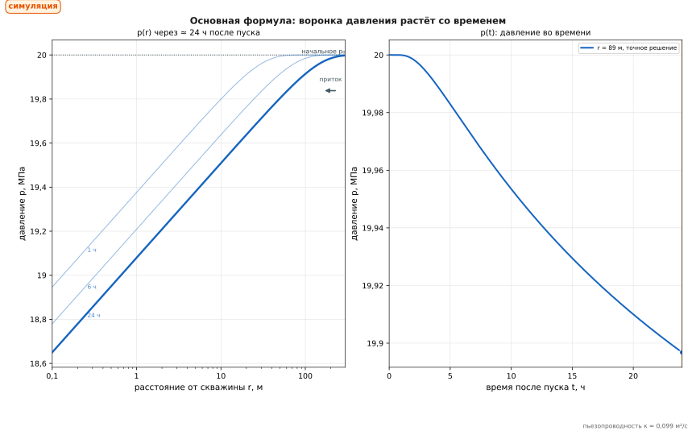

Стр. 490 · 5.2. Плоскорадиальный фильтрационный поток упругой жидкости. Основная формула теории упругого режима фильтрации
Интеграл в последней формуле легко свести к табличному подстановкой
Неустановившееся движение упругой жидкости в упругом пласте. Метод ПСССШаг 36 из 60
В книге: «Плоскорадиальный фильтрационный поток упругой жидкости. Основная формула теории упругого режима фильтрации» стр. 490–491
Опирается на: шаг 35 «Восстановить давление по двум условиям» (предпосылка), шаг 42 «Насколько важен радиус скважины» (переход к данным)
Давление вокруг скважины с постоянным дебитом выражается через интегральную показательную функцию Ei.
Вся зависимость от расстояния и времени входит в один аргумент r²/(4κt).
Это основная формула теории упругого режима; её применяют для расчёта давления и интерпретации исследований скважин.
Пороговая идея. Вся зависимость от времени и расстояния входит в аргумент одной функции. модель
Интеграл в (23.50) сводят к табличному подстановкой. Новая переменная u = ξ² = r²/(4κt). Дифференциал меняется так: dξ/ξ = du/(2u). стр. 490
«Интеграл в последней формуле легко свести к табличному подстановкой»
Затем возвращаются к размерному давлению: p = P·pк. Безразмерное давление просто умножают на контурное. стр. 490
«Перейдя также от безразмерного давления $P$ к размерному $p = P p_\kappa$, будем иметь окончательно»
Интеграл от e^(−u)/u называют интегральной показательной функцией. Её значения табулированы. Для неё есть специальное обозначение: −Ei(−r²/(4κt)). стр. 490
«Интеграл в формуле (23.51) называется интегральной показательной функцией, которая табулирована и имеет специальное обозначение»
«Интеграл в формуле (23.51) называется интегральной показательной функцией, которая табулирована и имеет специальное обозначение»
«Интеграл в формуле (23.51) называется интегральной показательной функцией, которая табулирована и имеет специальное обозначение»
Давление в любой точке плоскорадиального потока при упругом режиме даёт формула (23.52). p = pк − Q₀μ/(4πkh)·[−Ei(−r²/(4κt))]. Автор называет её основной формулой теории упругого режима фильтрации. стр. 491
«Таким образом, давление в любой точке плоскорадиального потока в условиях упругого режима фильтрации определяется по формуле»
«Формула (23.52) получила название основной формулы теории упругого режима фильтрации.»

Формула имеет широкое практическое применение. Её используют при интерпретации исследований скважин — объяснении наблюдаемого отклика давления. Ещё её используют в расчётах распределения давления. стр. 491
«Она имеет широкое практическое применение, в частности, используется при интерпретации результатов исследования скважин, в расчетах распределения давления при фильтрации упругой жидкости и т.д.»
«Она имеет широкое практическое применение, в частности, используется при интерпретации результатов исследования скважин, в расчетах распределения давления при фильтрации упругой жидкости и т.д.»
При замене дифференциала появляется множитель 1/2. В окончательной формуле (23.52) он учтён: в знаменателе стоит 4πkh. В промежуточной записи (23.51) он пропущен, поэтому считайте по (23.52). стр. 490–491
Как получить основную формулу
Новая переменная интегрирования и преобразование дифференциала. стр. 490
| Обозначение | Что это | Единицы |
|---|---|---|
| $u$ | переменная интегрирования после квадратичной замены | безразмерная |
| $\xi$ | автомодельная координата | безразмерная |
| $r$ | расстояние от оси скважины | м |
| $\kappa$ | коэффициент пьезопроводности | м²/с |
| $t$ | время после пуска | с |
Переход от безразмерного к размерному давлению. стр. 490
| Обозначение | Что это | Единицы |
|---|---|---|
| $p$ | давление | Па |
| $P$ | давление, делённое на начальное | безразмерное |
| $p_k$ | начальное, вдали от скважины также контурное давление | Па |
Промежуточная запись источника: коэффициент перед интегралом несогласован с заменой переменной и окончательной формулой; для расчёта используйте окончательную. стр. 490
| Обозначение | Что это | Единицы |
|---|---|---|
| $p$ | давление | Па |
| $r$ | расстояние от оси скважины | м |
| $t$ | время после пуска | с |
| $p_k$ | начальное, вдали от скважины также контурное давление | Па |
| $Q_0$ | постоянный объёмный дебит скважины | м³/с |
| $\mu$ | динамическая вязкость жидкости | Па·с |
| $k$ | проницаемость породы | м² |
| $h$ | толщина пласта | м |
| $\kappa$ | коэффициент пьезопроводности | м²/с |
| $u$ | переменная интегрирования после квадратичной замены | безразмерная |
Обозначение интегральной показательной функции; верхний предел восстановлен по предыдущей строке вывода. стр. 490
| Обозначение | Что это | Единицы |
|---|---|---|
| $\mathrm{Ei}$ | интегральная показательная функция | безразмерная |
| $r$ | расстояние от оси скважины | м |
| $\kappa$ | коэффициент пьезопроводности | м²/с |
| $t$ | время после пуска | с |
| $u$ | переменная интегрирования после квадратичной замены | безразмерная |
Основная формула: начальное давление минус понижение от отбора. стр. 491
| Обозначение | Что это | Единицы |
|---|---|---|
| $p$ | давление | Па |
| $r$ | расстояние от оси скважины | м |
| $t$ | время после пуска | с |
| $p_k$ | начальное, вдали от скважины также контурное давление | Па |
| $Q_0$ | постоянный объёмный дебит скважины | м³/с |
| $\mu$ | динамическая вязкость жидкости | Па·с |
| $k$ | проницаемость породы | м² |
| $h$ | толщина пласта | м |
| $\mathrm{Ei}$ | интегральная показательная функция | безразмерная |
| $\kappa$ | коэффициент пьезопроводности | м²/с |
Переходят обратно к давлению в физических единицах. Основную формулу применяют при расчёте давления и интерпретации исследований скважин.
Как вычислять по готовой библиотечной функции вместо повторного вычисления определяющего её интеграла.
Где аналогия перестаёт работать: У специальной функции важны конкретное соглашение о знаке и физический смысл аргумента.
При замене дифференциала в (23.50) появляется множитель 1/2. Он учтён в окончательной (23.52), но пропущен в записи (23.51). В следующей строке источника у интеграла также пропущен верхний предел.
Верный ответ: Основная формула теории упругого режима фильтрации
Так формулу (23.52) называет автор. Где это в тексте (стр. 491) →
Верный ответ: Её значения табулированы; У неё есть специальное обозначение Ei; Её аргумент — r²/(4κt)
Время входит в аргумент r²/(4κt). Где это в тексте (стр. 490) →
Верный ответ: При интерпретации исследований скважин; В расчётах распределения давления
Автор называет эти два применения. Где это в тексте (стр. 491) →
Все утверждения шага с дословной цитатой автора и страницей книги (по PDF).
Заменой переменной интеграл сводится к табличному. наблюдение
«Интеграл в последней формуле легко свести к табличному подстановкой»
К давлению в физических единицах возвращаются умножением безразмерного давления на контурное. вывод
«Перейдя также от безразмерного давления $P$ к размерному $p = P p_\kappa$, будем иметь окончательно»
Интеграл отождествляют с интегральной показательной функцией. наблюдение
«Интеграл в формуле (23.51) называется интегральной показательной функцией, которая табулирована и имеет специальное обозначение»
Интегральная показательная функция имеет специальное обозначение. наблюдение
«Интеграл в формуле (23.51) называется интегральной показательной функцией, которая табулирована и имеет специальное обозначение»
Значения функции табулированы. наблюдение
«Интеграл в формуле (23.51) называется интегральной показательной функцией, которая табулирована и имеет специальное обозначение»
В плоскорадиальном потоке упругой жидкости формула определяет давление в выбранной точке. наблюдение
«Таким образом, давление в любой точке плоскорадиального потока в условиях упругого режима фильтрации определяется по формуле»
Автор называет выражение основной формулой теории упругого режима фильтрации. наблюдение
«Формула (23.52) получила название основной формулы теории упругого режима фильтрации.»
Основную формулу используют для интерпретации исследований скважин. наблюдение
«Она имеет широкое практическое применение, в частности, используется при интерпретации результатов исследования скважин, в расчетах распределения давления при фильтрации упругой жидкости и т.д.»
Основную формулу применяют при вычислении распределения давления. наблюдение
«Она имеет широкое практическое применение, в частности, используется при интерпретации результатов исследования скважин, в расчетах распределения давления при фильтрации упругой жидкости и т.д.»
Стр. 490 · 5.2. Плоскорадиальный фильтрационный поток упругой жидкости. Основная формула теории упругого режима фильтрации
Интеграл в последней формуле легко свести к табличному подстановкой
Стр. 490 · 5.2. Плоскорадиальный фильтрационный поток упругой жидкости. Основная формула теории упругого режима фильтрации
$$u = \xi^2 = \frac{r^2}{4\kappa t}, \quad \frac{d\xi}{\xi} = \frac{du}{2u}.$$
Стр. 490 · 5.2. Плоскорадиальный фильтрационный поток упругой жидкости. Основная формула теории упругого режима фильтрации
Перейдя также от безразмерного давления $P$ к размерному $p = P p_\kappa$, будем иметь окончательно
Стр. 490 · 5.2. Плоскорадиальный фильтрационный поток упругой жидкости. Основная формула теории упругого режима фильтрации
$$p(r, t) = p_\kappa - \frac{Q_0 \mu}{2\pi k h} \int_{r^2/(4\kappa t)}^{\infty} \frac{e^{-u}}{u} du. \quad (23.51)$$
Стр. 490 · 5.2. Плоскорадиальный фильтрационный поток упругой жидкости. Основная формула теории упругого режима фильтрации
Интеграл в формуле (23.51) называется интегральной показательной функцией, которая табулирована и имеет специальное обозначение
Стр. 490 · 5.2. Плоскорадиальный фильтрационный поток упругой жидкости. Основная формула теории упругого режима фильтрации
$$- \text{Ei} \left( - \frac{r^2}{4\kappa t} \right) = \int_{r^2/(4\kappa t)} \frac{e^{-u}}{u} du.$$
Стр. 491 · 5.2. Плоскорадиальный фильтрационный поток упругой жидкости. Основная формула теории упругого режима фильтрации
Таким образом, давление в любой точке плоскорадиального потока в условиях упругого режима фильтрации определяется по формуле
Стр. 491 · 5.2. Плоскорадиальный фильтрационный поток упругой жидкости. Основная формула теории упругого режима фильтрации
$$p(r, t) = p_\kappa - \frac{Q_0 \mu}{4 \pi k h} \left[ - \text{Ei} \left( - \frac{r^2}{4 \kappa t} \right) \right]. \quad (23.52)$$
Стр. 491 · 5.2. Плоскорадиальный фильтрационный поток упругой жидкости. Основная формула теории упругого режима фильтрации
Формула (23.52) получила название основной формулы теории упругого режима фильтрации. Она имеет широкое практическое применение, в частности, используется при интерпретации результатов исследования скважин, в расчетах распределения давления при фильтрации упругой жидкости и т.д.
На этот шаг опираются: шаг 37 «Как вычислить функцию Ei рядом», шаг 38 «Когда достаточно логарифма», шаг 39 «Расход и скорость вокруг скважины», шаг 41 «Проверить влияние внешней границы», шаг 42 «Насколько важен радиус скважины», шаг 44 «Зачем нужны приближённые методы», шаг 58 «Ошибка ПССС убывает со временем».
Основная формула упругого режима
Ссылки в ответе ведут к исходному тексту.